Goal of this HowTo will be to show the principles of writing a Script Query, including script, xml and all needed templates. Why should you create such a thing? Suppose, your target features some indexed readings, that are not available via SNMP but by some other method (e.g. wget/cgi, ssh, NRPE, …). Writing a Script Data Queries works very much the same way as SNMP Data Queries. But nevertheless, I'll take you through all of the steps now.
The example uses PHP. Why PHP? First, it's easier to copy stuff from already existing PHP scripts. Second, it would be possible to use cacti functions. It should be possible to imagine, how this works with other programming languages. Strictly speaking, I'm not that PHP expert. So be patient with me.
Please pay attention. This HowTo will not explain how to write a Script Server Data Query (yes, there is such a thing!). It would not introduce that many changes. But this will be left to some other HowTo.
Personally, my primary goal was to use an example, that all users should be able to copy to execute each and every step on its own. Unfortunately, there seems to be no example, that is common enough and interesting at the same time. So I'm sorry to announce, that this HowTo will show “Interface Traffic Data Gathering”. Yes, I know, this is not that new. And surely, it will not be as fast as pure SNMP. So, to my shame, I suppose that this will never make it into any production environment. But, again, this is not the primary goal.
Before starting the work, I feel encouraged to point out a drawback of this approach. Cacti will start a PHP instance, each time it has to fetch a value from the target device. This is not that fast, obviously. And it will not prosper from the performance boost when switching over from cmd.php to Spine. Of course, even Spine will need to start php! And that's exactly, where the thingy called Script Server Data Query drops in. But let's leave this for the next main chapter.
The code runs on Cacti 0.8.7 versions.
The starting point will be some very basic php script. Put it into <path_cacti>/scripts/query_interface_traffic.php. It will show interface indices only for the given target host. The script takes two parameters as input, the hostname of the target and the string index. You have to implement the index method, as OO programmers would say. In this case, there's an “if” clause to process index requests. Output is a list of indices, each one on a separate line.
<?php
# include some cacti files for ease of use
include(dirname(__FILE__) . '/../include/cli_check.php');
include(dirname(__FILE__) . '/../lib/snmp.php');
# define all OIDs we need for further processing
$oids = array(
'index' => '.1.3.6.1.2.1.2.2.1.1',
);
$xml_delimiter = '!';
# all required input parms
$hostname = $_SERVER['argv'][1]; # hostname/IP@
$cmd = $_SERVER['argv'][2]; # one of: index/query/get
# put your own community string here
$snmp_community = 'public'; # community string
$snmp_version = 1; # snmp version
$snmp_port = 161; # snmp port
$snmp_timeout = 500; # snmp timeout
$snmp_retries = 3; # snmp retries
$max_oids = 1; # max oids for V2/V3 hosts
# required for SNMP V3
$snmp_auth_username = '';
$snmp_auth_password = '';
$snmp_auth_protocol = '';
$snmp_priv_passphrase = '';
$snmp_priv_protocol = '';
$snmp_context = '';
# -------------------------------------------------------------------------
# main code starts here
# -------------------------------------------------------------------------
# -------------------------------------------------------------------------
# script MUST respond to index queries
# the command for this is defined within the XML file as
# <arg_index>index</arg_index>
# you may replace the string 'index' both in the XML and here
# -------------------------------------------------------------------------
# php -q <script> <parms> index
# will list all indices of the target values
# e.g. in case of interfaces
# it has to respond with the list of interface indices
# -------------------------------------------------------------------------
if ($cmd == 'index') {
# retrieve all indices from target
$return_arr = reindex(cacti_snmp_walk($hostname, $snmp_community,
$oids['index'], $snmp_version, $snmp_auth_username,
$snmp_auth_password, $snmp_auth_protocol, $snmp_priv_passphrase, $snmp_priv_protocol,
$snmp_context, $snmp_port, $snmp_timeout, $snmp_retries, $max_oids, SNMP_POLLER));
# and print each index as a separate line
for ($i=0;($i<sizeof($return_arr));$i++) {
print $return_arr[$i] . "\n";
}
} else {
print "Invalid use of script query, required parameters:\n\n";
print " <hostname> <cmd>\n";
}
function reindex($arr) {
$return_arr = array();
for ($i=0;($i<sizeof($arr));$i++) {
$return_arr[$i] = $arr[$i]['value'];
}
return $return_arr;
}It will be called like this
php -q query_interface_traffic.php <your target host> index
1
2
3
4
As you see, my <target> has 4 indices (interfaces).
You may wonder why this function drops in. Well, lets have a look at cacti_snmp_walk. This function is part of cacti itself and eases the use of SNMP. That's why I call it here. But unfortunately, it's output looks like
Array
(
[0] => Array
(
[oid] => 1.3.6.1.2.1.2.2.1.1.1
[value] => 1
)
[1] => Array
(
[oid] => 1.3.6.1.2.1.2.2.1.1.2
[value] => 2
)
[2] => Array
(
[oid] => 1.3.6.1.2.1.2.2.1.1.3
[value] => 3
)
[3] => Array
(
[oid] => 1.3.6.1.2.1.2.2.1.1.4
[value] => 4
)
)The values of interest are stored in $return_arr[$i] = $arr[$i][“value”];. The function_reindex gets them all.
This given, the first step will be the xml file defining how to access index values only. So change to your <path_cacti>/resources/script_queries directory and create a file named ifTraffic.xml. You may of course choose your own name.
<interface>
<name>Get Interface Traffic Information</name>
<script_path>|path_php_binary| -q |path_cacti|/scripts/query_interface_traffic.php</script_path>
<arg_prepend>|host_hostname|</arg_prepend>
<arg_index>index</arg_index>
<fields>
<ifIndex>
<name>Index</name>
<direction>input</direction>
<query_name>index</query_name>
</ifIndex>
</fields>
</interface>Lets talk about the header elements
| field | description |
|---|---|
| name | Short Name; chose your own one if you want |
| script_path | Whole command to execute the script from cli. path_php_binaryis a cacti builtin variable for/the/full/path/to/php. path_cacti in turn gives the path of the current cacti installation directory. |
| arg_prepend | All arguments passed to the script go here. There are some builtin variables, again. host_hostname represents the hostname of the device this query will be associated to. |
| arg_index | The string given here will be passed just after all <arg_prepend> to the script for indexing requests. Up to now, this is the only method our script will answer to. |
| fields | All fields will be defined in this section. Up to now, only the index field is defined |
| name | The name of this very field |
| query_name | Name of this field when performing a query or a get request (will be shown later, don't worry now). |
| direction | Description |
|---|---|
| input | defines all fields that serve as a descriptive information to a specific table index. These values will not be graphed but may be printed in e.g.graph titles by means of query\_<name> |
| output | defines all fields that will yield a number that should be stored in some RRDfile |
Now save this file and lets turn to cacti to implement this one. First, go to Data Queries to see
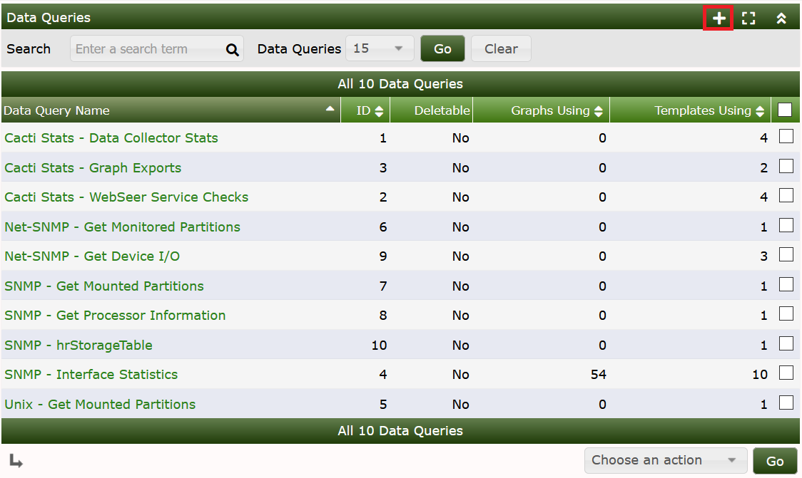
and Add a new one:
Fill in Short and Long Names at your wish. Enter the file name of the XML file and don't forget to choose Get Script Data (indexed). Create to see

It has now Successfully located XML file. But this does not mean that there are no errors. So lets go on with that. Turn to the Device you want to query and add the new Data Query as shown:

Index Count Changed was chosen on purpose to tell cacti to re-index not only on reboot but each time the Index Count (e.g. number of interfaces) changed. When done, see the results as

To see your script at work, select Verbose Query to see:
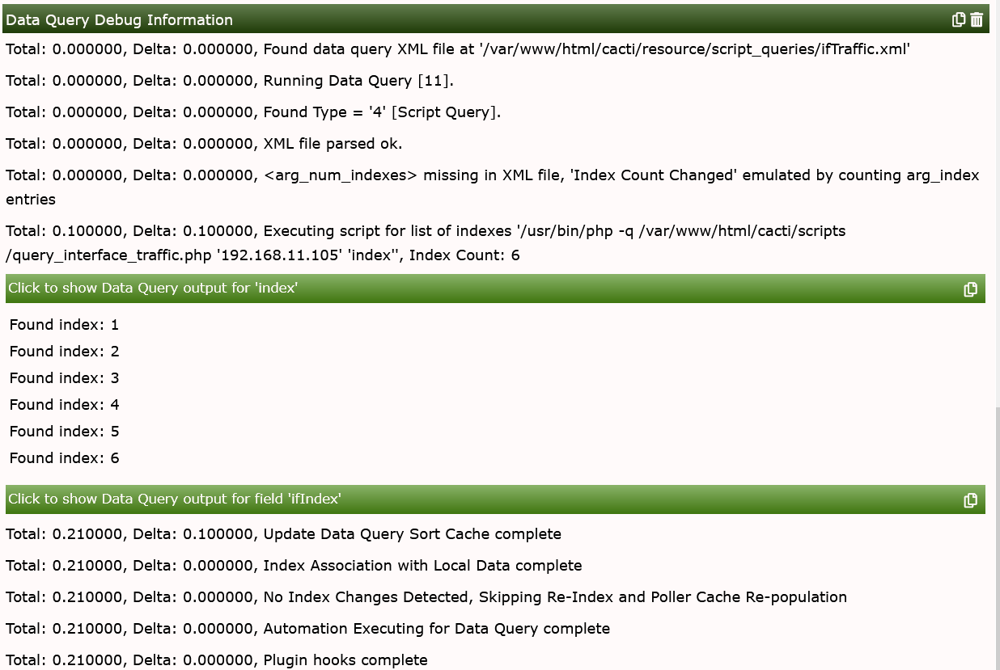
Now, lets improve our basic script. First, lets define all the variables (OIDs), this script should ask for.
<?php
/* do NOT run this script through a web browser */
if (!isset($_SERVER["argv"][0]) || isset($_SERVER['REQUEST_METHOD']) || isset($_SERVER['REMOTE_ADDR'])) {
die("<br><strong>This script is only meant to run at the command line.</strong>");
}
# deactivate http headers
$no_http_headers = true;
# include some cacti files for ease of use
include(dirname(__FILE__) . "/../include/global.php");
include(dirname(__FILE__) . "/../lib/snmp.php");
# define all OIDs we need for further processing
$oids = array(
"index" => ".1.3.6.1.2.1.2.2.1.1",
"ifstatus" => ".1.3.6.1.2.1.2.2.1.8",
"ifdescription" => ".1.3.6.1.2.1.2.2.1.2",
"ifname" => ".1.3.6.1.2.1.31.1.1.1.1",
"ifalias" => ".1.3.6.1.2.1.31.1.1.1.18",
"iftype" => ".1.3.6.1.2.1.2.2.1.3",
"ifspeed" => ".1.3.6.1.2.1.2.2.1.5",
"ifHWaddress" => ".1.3.6.1.2.1.2.2.1.6",
"ifInOctets" => ".1.3.6.1.2.1.2.2.1.10",
"ifOutOctets" => ".1.3.6.1.2.1.2.2.1.16",
);
$xml_delimiter = "!";The next step removes all the builtin “magic strings” and replaces them by parameters. We'll have to change the XML template for that (see: <arg_prepend> later on). Cacti supports more SNMP parameters since version 0.8.7:
# all required input parms
$hostname = $_SERVER["argv"][1];
$snmp_community = $_SERVER["argv"][2];
$snmp_version = $_SERVER["argv"][3];
$snmp_port = $_SERVER["argv"][4];
$snmp_timeout = $_SERVER["argv"][5];
$max_oids = $_SERVER["argv"][6];
# required for SNMP V3
$snmp_auth_username = $_SERVER["argv"][7];
$snmp_auth_password = $_SERVER["argv"][8];
$snmp_auth_protocol = $_SERVER["argv"][9];
$snmp_priv_passphrase = $_SERVER["argv"][10];
$snmp_priv_protocol = $_SERVER["argv"][11];
$snmp_context = $_SERVER["argv"][12];
$cmd = $_SERVER["argv"][13];
if (isset($_SERVER["argv"][14])) { $query_field = $_SERVER["argv"][14]; };
if (isset($_SERVER["argv"][15])) { $query_index = $_SERVER["argv"][15]; };
# get number of snmp retries from global settings
$snmp_retries = read_config_option("snmp_retries");The code responsible for the “index” option is left unchanged:
# -------------------------------------------------------------------------
# script MUST respond to index queries
# the command for this is defined within the XML file as
# <arg_index>index</arg_index>
# you may replace the string "index" both in the XML and here
# -------------------------------------------------------------------------
# php -q <script> <parms> index
# will all indices of the target values
# e.g. in case of interfaces
# it has to respond with the list of interface indices
# -------------------------------------------------------------------------
if ($cmd == "index") {
# retrieve all indices from target
$return_arr = reindex(cacti_snmp_walk($hostname, $snmp_community,
$oids["index"], $snmp_version, $snmp_auth_username,
$snmp_auth_password, $snmp_auth_protocol, $snmp_priv_passphrase, $snmp_priv_protocol,
$snmp_context, $snmp_port, $snmp_timeout, $snmp_retries, $max_oids, SNMP_POLLER));
# and print each index as a separate line
for ($i=0;($i<sizeof($return_arr));$i++) {
print $return_arr[$i] . "\n";
}The new code implements the query function as follows
#
# -------------------------------------------------------------------------
# script MUST respond to query requests
# the command for this is defined within the XML file as
# <arg_query>query</arg_query>
# you may replace the string "query" both in the XML and here
# -------------------------------------------------------------------------
# php -q <script> <parms> query <function>
# where <function> is a parameter that tells this script,
# which target value should be retrieved
# e.g. in case of interfaces, <function> = ifdescription
# it has to respond with the list of
# interface indices along with the description of the interface
# -------------------------------------------------------------------------
} elseif ($cmd == "query" && isset($query_field)) {
$arr_index = reindex(cacti_snmp_walk($hostname, $snmp_community,
$oids["index"], $snmp_version, $snmp_auth_username,
$snmp_auth_password, $snmp_auth_protocol, $snmp_priv_passphrase, $snmp_priv_protocol,
$snmp_context, $snmp_port, $snmp_timeout, $snmp_retries, $max_oids, SNMP_POLLER));
$arr = reindex(cacti_snmp_walk($hostname, $snmp_community,
$oids[$query_field], $snmp_version, $snmp_auth_username,
$snmp_auth_password, $snmp_auth_protocol, $snmp_priv_passphrase, $snmp_priv_protocol,
$snmp_context, $snmp_port, $snmp_timeout, $snmp_retries, $max_oids, SNMP_POLLER));
for ($i=0;($i<sizeof($arr_index));$i++) {
print $arr_index[$i] . $xml_delimiter . $arr[$i] . "\n";
}Last option is the get function
#
# -------------------------------------------------------------------------
# script MUST respond to get requests
# the command for this is defined within the XML file as
# <arg_get>get</arg_get>
# you may replace the string "get" both in the XML and here
# -------------------------------------------------------------------------
# php -q <script> <parms> get <function> <index>
# where <function> is a parameter that tells this script,
# which target value should be retrieved
# and <index> is the index that should be queried
# e.g. in case of interfaces, <function> = ifdescription
# <index> = 1
# it has to respond with
# the description of the interface for interface #1
# -------------------------------------------------------------------------
} elseif ($cmd == "get" $$ isset($query_field) && isset($query_index)) {
print (cacti_snmp_get($hostname, $snmp_community,
$oids[$query_field] . ".$query_index", $snmp_version, $snmp_auth_username,
$snmp_auth_password, $snmp_auth_protocol, $snmp_priv_passphrase, $snmp_priv_protocol,
$snmp_context, $snmp_port, $snmp_timeout, $snmp_retries, $max_oids, SNMP_POLLER));The rest of it is left unchanged. For sake of completeness, I repeat it here
# -------------------------------------------------------------------------
# -------------------------------------------------------------------------
} else {
print "Invalid use of script query, required parameters:\n\n";
print " <hostname> <community> <version> <snmp_port> <timeout>
<max_oids> <auth_user> <auth_passphrase> <auth_proto>
<priv_passphrase> <priv_proto> <context> <cmd>\n";
}
function reindex($arr) {
$return_arr = array();
for ($i=0;($i<sizeof($arr));$i++) {
$return_arr[$i] = $arr[$i]["value"];
}
return $return_arr;
}
?>You may want to copy all those fragments together and replace the basic script. Now, lets have a try using the command line. The “index” option was already shown, but is repeated here
[me@gandalf scripts]$ php -q query_interface_traffic.php <target> <community> 1 161 500 "" "" "" "" "" "" "" index
1
2
3
4
Of course, we now will have to complete the XML file given in Chapter II. Find it at <path_cacti>/resources/script_queries/ifTraffic.xml.
<interface>
<name>Get Interface Traffic Information</name>
<script_path>|path_php_binary| -q |path_cacti|/scripts/query_interface_traffic.php</script_path>
<arg_prepend>|host_hostname| |host_snmp_community| |host_snmp_version| |host_snmp_port| |host_snmp_timeout| |host_max_oids| "|host_snmp_username|" "|host_snmp_password|" "|host_snmp_auth_protocol|" "|host_snmp_priv_passphrase|" "|host_snmp_priv_protocol|" "|host_snmp_context|"</arg_prepend>
<arg_index>index</arg_index>
<arg_query>query</arg_query>
<arg_get>get</arg_get>
<output_delimeter>!</output_delimeter>
<index_order>ifIndex</index_order>
<index_order_type>numeric</index_order_type>
<index_title_format>|chosen_order_field|</index_title_format>Let's discuss the changes
| Field | Description |
|---|---|
| arg_prepend | some more parameters were added to provide all necessary values for the script. They are position-dependent. You may notice the strange tics I've added to e.g. host_snmp_username and host_snmp_password. If you're not using those SNMP V3 parameters, they must be quoted, else the script would fail because two parameters would be missing. |
| arg_query | The string passed to the query to perform query requests is given here. So you may modify it to your liking (in this case, the script has to be modified accordingly). |
| arg_get | Some as above for get requests |
| output_delimiter | The delimiter used for query requests to separate index and value |
| index_order (optional) | Cacti will attempt to find the best field to index off of based on whether each row in the query is unique and non-null. If specified, Cacti will perform this check on the fields listed here in the order specified. Only input fields can be specified and multiple fields should be delimited with a comma. |
| index_title_format (optional) | Specify the title format to use when representing an index to the user. Any input field name can be used as a variable if enclosed in pipes ( ). The variable chosen_order_field will be substituted with the field chosen by Cacti to index off of (see index_order above). Text constants are allowed as well |
| index_order_type (optional) | For sorting purposes, specify whether the index is numeric or alphanumeric. |
| Type | Description |
|---|---|
| numeric | The indexes in this script query are to be sorted numerically (ie. 1,2,3,10,20,31) |
| alphabetic | The indexes in this script query are to be sorted alphabetically (1,10,2,20,3,31) |
Now lets turn to the fields section:
....
<fields>
<ifIndex>
<name>Index</name>
<direction>input</direction>
<query_name>index</query_name>
</ifIndex>
<ifstatus>
<name>Status</name>
<direction>input</direction>
<query_name>ifstatus</query_name>
</ifstatus>
<ifdescription>
<name>Description</name>
<direction>input</direction>
<query_name>ifdescription</query_name>
</ifdescription>
<ifname>
<name>Name</name>
<direction>input</direction>
<query_name>ifname</query_name>
</ifname>
<ifalias>
<name>Alias</name>
<direction>input</direction>
<query_name>ifalias</query_name>
</ifalias>
<iftype>
<name>Type</name>
<direction>input</direction>
<query_name>iftype</query_name>
</iftype>
<ifspeed>
<name>Speed</name>
<direction>input</direction>
<query_name>ifspeed</query_name>
</ifspeed>
<ifHWaddress>
<name>HWaddress</name>
<direction>input</direction>
<query_name>ifHWaddress</query_name>
</ifHWaddress>
<ifInOctets>
<name>InOctets</name>
<direction>output</direction>
<query_name>ifInOctets</query_name>
</ifInOctets>
<ifOutOctets>
<name>OutOctets</name>
<direction>output</direction>
<query_name>ifOutOctets</query_name>
</ifOutOctets>
</fields>
</interface>These fields are related to the OID array of the script. Attention: The query_name strings must match the OID names exactly! Please notice, that all but the last two fields use direction input. All variables representing numeric values to be graphed must be defined as direction output instead.
Now, lets test the “query” option. The keyword “query” must be given along with the variable, that should be queried. The script now will scan all indices and report the contents of the given variable as follows:
[me@gandalf scripts]$ php -q query_interface_traffic.php <target> <community> 1 161 500 "" "" "" "" "" "" "" query iftype
1!ethernetCsmacd(6)
2!0
3!0
4!ethernetCsmacd(6)
The output reports the index, followed by the chosen delimiter. Then, the content of the requested variable is printed
Last, the “get” option is shown. The keyword “get” is required, followed again by the variable (see above). Last needed option is the index, for which the “get” should be performed. Contrary to the “query” option, only one index is scanned. So the index number is not required and will not be printed.
[me@gandalf scripts]$ php -q query_interface_traffic.php <target> <community> 1 161 500 "" "" "" "" "" "" "" get iftype 1
ethernetCsmacd(6)
The output is not followed by a “newline”!
Lets return to the Device and perform a Verbose Query again. The result is as follows
+ Running data query [21].
+ Found type = '4 '[script query].
+ Found data query XML file at '/var/www/html/cacti/resource/script_queries/ifTraffic.xml'
+ XML file parsed ok.
+ Executing script for list of indexes '/usr/bin/php -q /var/www/html/cacti/scripts/query_interface_traffic.php router snmp-get 1 161 600 10 "admin" "admin" "MD5" "" "DES" "" index'
+ Executing script query '/usr/bin/php -q /var/www/html/cacti/scripts/query_interface_traffic.php router snmp-get 1 161 600 10 "admin" "admin" "MD5" "" "DES" "" query index'
+ Found item [ifIndex='1'] index: 1
+ Found item [ifIndex='2'] index: 2
+ Found item [ifIndex='3'] index: 3
+ Found item [ifIndex='4'] index: 4
+ Executing script query '/usr/bin/php -q /var/www/html/cacti/scripts/query_interface_traffic.php router snmp-get 1 161 600 10 "admin" "admin" "MD5" "" "DES" "" query ifstatus'
+ Found item [ifstatus='up(1)'] index: 1
+ Found item [ifstatus='up(1)'] index: 2
+ Found item [ifstatus='up(1)'] index: 3
+ Found item [ifstatus='up(1)'] index: 4
+ Executing script query '/usr/bin/php -q /var/www/html/cacti/scripts/query_interface_traffic.php router snmp-get 1 161 600 10 "admin" "admin" "MD5" "" "DES" "" query ifdescription'
+ Found item [ifdescription='Ethernet0'] index: 1
+ Found item [ifdescription=''] index: 2
+ Found item [ifdescription=''] index: 3
+ Found item [ifdescription='Ethernet1'] index: 4
+ Executing script query '/usr/bin/php -q /var/www/html/cacti/scripts/query_interface_traffic.php router snmp-get 1 161 600 10 "admin" "admin" "MD5" "" "DES" "" query ifname'
+ Found item [ifname=''] index: 1
+ Found item [ifname=''] index: 2
+ Found item [ifname=''] index: 3
+ Found item [ifname=''] index: 4
+ Executing script query '/usr/bin/php -q /var/www/html/cacti/scripts/query_interface_traffic.php router snmp-get 1 161 600 10 "admin" "admin" "MD5" "" "DES" "" query ifalias'
+ Found item [ifalias=''] index: 1
+ Found item [ifalias=''] index: 2
+ Found item [ifalias=''] index: 3
+ Found item [ifalias=''] index: 4
+ Executing script query '/usr/bin/php -q /var/www/html/cacti/scripts/query_interface_traffic.php router snmp-get 1 161 600 10 "admin" "admin" "MD5" "" "DES" "" query iftype'
+ Found item [iftype='ethernetCsmacd(6)'] index: 1
+ Found item [iftype='0'] index: 2
+ Found item [iftype='0'] index: 3
+ Found item [iftype='ethernetCsmacd(6)'] index: 4
+ Executing script query '/usr/bin/php -q /var/www/html/cacti/scripts/query_interface_traffic.php router snmp-get 1 161 600 10 "admin" "admin" "MD5" "" "DES" "" query ifspeed'
+ Found item [ifspeed='100000000'] index: 1
+ Found item [ifspeed='0'] index: 2
+ Found item [ifspeed='0'] index: 3
+ Found item [ifspeed='10000000'] index: 4
+ Executing script query '/usr/bin/php -q /var/www/html/cacti/scripts/query_interface_traffic.php router snmp-get 1 161 600 10 "admin" "admin" "MD5" "" "DES" "" query ifHWaddress'
+ Found item [ifHWaddress='00:30:30:2E:35:30:2E:37:46:2E:30:43:2E:30:30:2E:44:16:00:00:00:01:00'] index: 1
+ Found item [ifHWaddress=''] index: 2
+ Found item [ifHWaddress=''] index: 3
+ Found item [ifHWaddress=''] index: 4
+ Found data query XML file at '/var/www/html/cacti/resource/script_queries/ifTraffic.xml'
+ Found data query XML file at '/var/www/html/cacti/resource/script_queries/ifTraffic.xml'
+ Found data query XML file at '/var/www/html/cacti/resource/script_queries/ifTraffic.xml'
Of course, snmp_username and snmp_user_password and more may differ from your installation defaults. Read it carefully, and you'll notice, that all XML fields were scanned and the output shown. All? No, not all. The direction output fields are missing! But this is on purpose as those won't make sense as header fields but will be written to RRDfiles.
As usual, next step is to create the Data Template. Select that menu item and Add:
and find:

Fill in Data Template Name, Data Source Name, and, most important, select Data Input Method to read Get Script Data (Indexed), and Data Source Profile.
When creating the Data Template and Graph Template, you SHOULD check the Use Per Data Source Value checkbox for name & title. When you first create graphs using the data query, it will use the Suggested Values to name the templates. But then if you ever edit the templates and leave the Use Per Data Source Value unchecked, then saving will overwrite all the data source and graph names.
Now, before you press the Create button also please proceed to the lower half of the form and complete the first RRDfile Data Source. Enter the Internal Data Source Name. You may select this name freely, though note your are limited to only 19 characters and spaces are not allowed. There's no need to match it to any of the XML field names. As the OID is a COUNTER, the Data Source Type must be selected appropriately. Create.
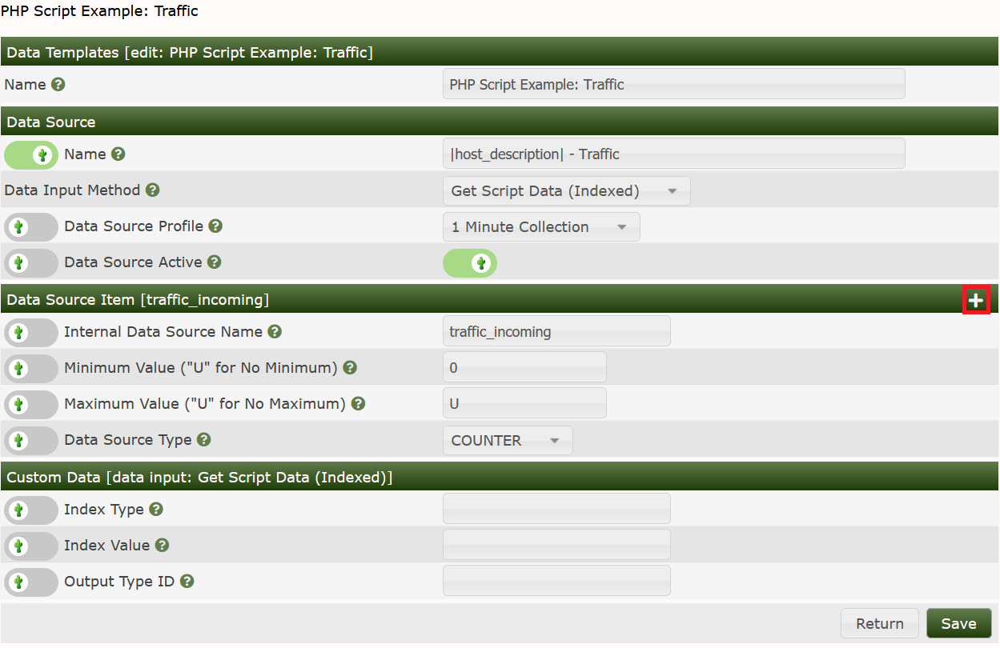
For the second data source item, please select New.
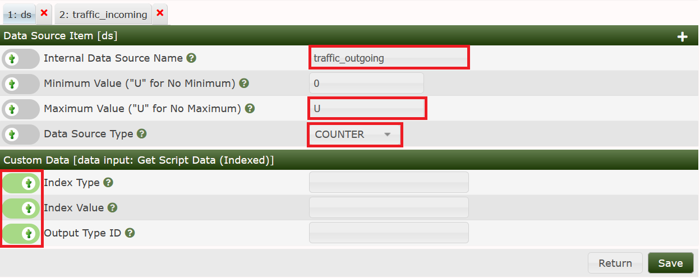
Again, fill in the Data Source Name. Pay attention to set the maximum value to 0 to avoid clipping it off during updating of the RRDfile. COUNTER has to be set as done above. Important! You have to select the marked Index fields! Now, save again and you're done.
Now, its time for the Graph Template. Select this menu item and Add.
and fill in the values as usual:
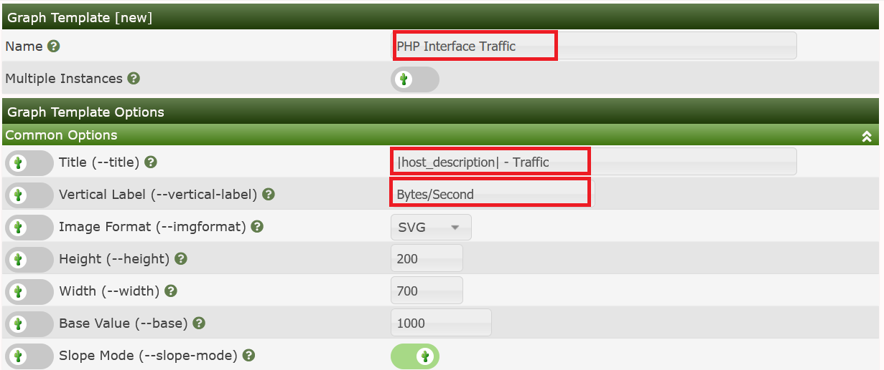
Now Save. Next, fill in the Graph Items
Select the Data Source from our Data Template, take the color and select AREA, enter some text

Save and add the next graph item. Now, we're going to use the “LEGEND” time saver again:

For the next step, it's necessary to remove the newline added with the last action. Please select the 4th item as follows
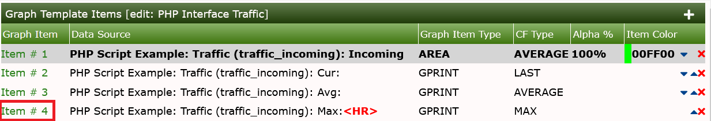
and remove the newline by deselecting the checkbox

Now lets add the same data source again, but as a LINE1, MAXimum with a slightly changed color. Newline is checked this time
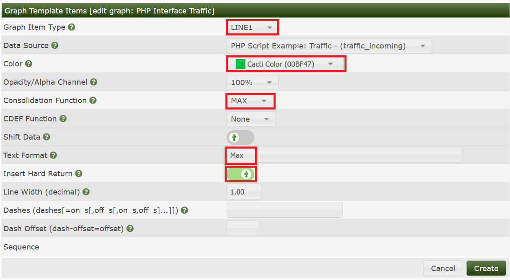
Pooh. Now lets apply the same procedure for the Outgoing Traffic. Personally, I love those outgoing stuff to be presented on the negative y-axis. So we'll have to apply some CDEF magic to some items. Lets see

Please pay attention when adding the “LEGEND” stuff. No CDEF to be applied in this case (else, legends will show negative values)
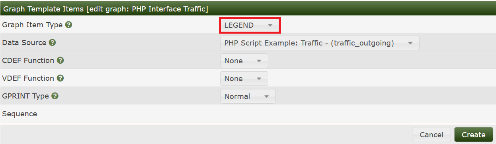
Again, select last legend item

to remove the newline

and add a new LINE1, MAXimum, “Make Stack Negative” CDEF with some text and a newline

Hoping, you've got all those steps correctly, finally Save your work. Take a cup of coffee to get your brains free again, kiss your wife, hug your children and/or pet your dog; sequence is arbitrary.
Huh, that sound complicated. Why would it be necessary to do so? Let me explain: You remember the Data Template, do you? The names of the data source item was chosen arbitrary. The Graph Items were associated with those data source items, but those in turn were not related to anything in the XML file. Not related? Not yet! So, let's revisit the Data Query. Remember the lower part on Associated Graph Templates. Click Add
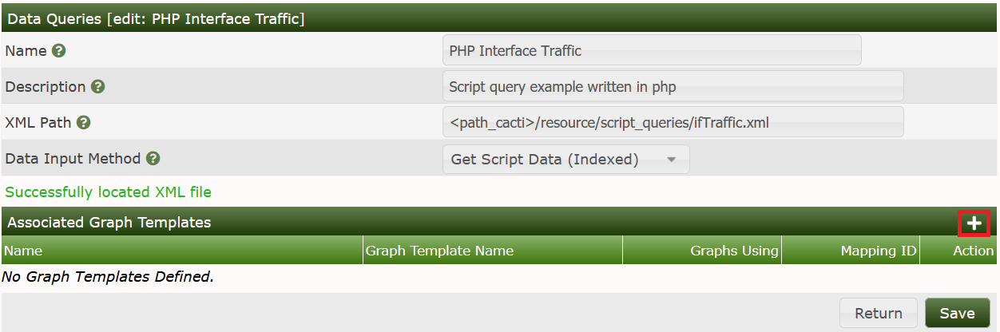
fill in a name for your choice and select the Graph Template that we have created in the last step.
Create to see
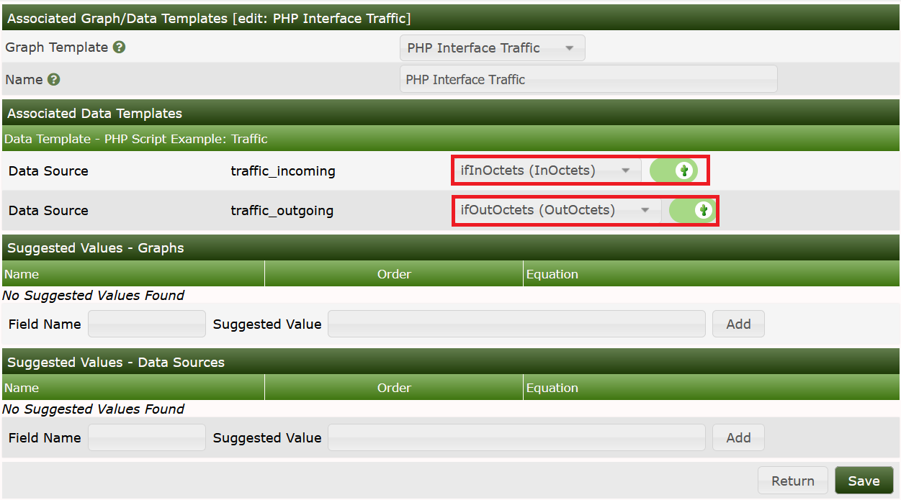
First, let's have a look at the upper half of the screen. The red box to the left show the Internal Data Source Names names taken from the Data Template that is associated with the Graph template we've just added. The red box to the middle has a dropdown for each data source item. The dropdown list contains all output fields taken from the XML file. In our case, there are only two of them. The red box to the right must be checked on each line, to make the association valid. Now, lets turn to the lower half of the screen, denoted Suggested Values

The example shows |host_description| - Traffic - |query_ifdescription| entered both for name of the Data Template and title of the Graph Template. Click Add, one by one

Notice the second title I've added here. If more than one entry is present, they are applied from top to bottom, until a match is found. Match means, that all variables present are filled. Of course, you may add more than one variable taken from the XML file. But pay attention, that not all devices will fill all those variables. So my router does, sigh. You may use all input variables listed in the XML file. A <variable> may be listed as |query_<variable>|, e.g. for ifalias write |query_ifalias| and so forth.
Click Save, and find the new Graph Template added to the list of Associated Graph Templates.
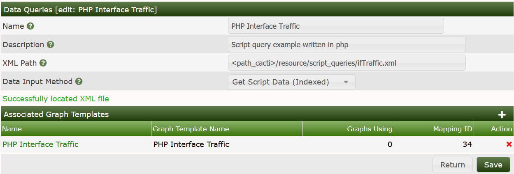
You may continue to add more Graph Templates, each of them may be related to other output field of the XML file. Find, as an example, lots of graph templates associated to the standard Interface Statistics Data Query to get an idea what I'm talking about.
Don't worry about the first two entries; they are home-made.
Now, let's return to the Device, that we've already have used for this Data Query. Create Graphs for this Host

to see
I've left the standard Interface Statistics in the screenshot. So you may compare both Queries. Our PHP Interface Traffic stuff has two more header items, Name and Alias. But all data seen equals the standard SNMP Data Query; not that bad, eh?
Now, select one item
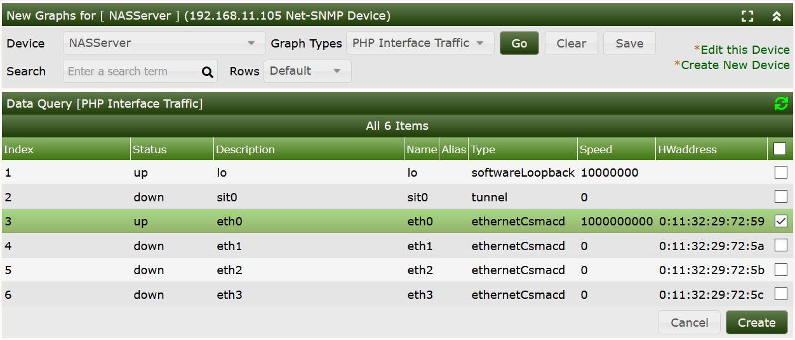
and Create

You'll have to wait a bit, at least two polling cycles. Then, you may notice some data in your new graph. The next image shows both our new graph (the first one) and a standard interface traffic graph. The latter one holds more data in this example, don't worry about that.

Having a closer view, you may notice a difference in magnitude (y-axis). But please compare the units used. The first graph uses Bytes, the latter one uses Bits. For comparison, it would be necessary to multiply the first one with 8. This may be done using a CDEF Turn Bytes into Bits, applied to all items of the Graph Template. This task is left to you.
Please find the example resource, script, and Data Query below. Save ifTraffic.xml into ./resource/script_queries, and query_interface_traffic.php into the ./scripts directory and import the Data Query cacti_data_query_php_interface_traffic.xml.
Cacti Data Query for PHP Interface Traffic
ifTraffic.xml download and store into resource/script_queries.
query_interface_traffic.php download and store into scripts.
Copyright (c) 2004-2024 The Cacti Group